vignettes/ariadneDB.Rmd
ariadneDB.RmdThe way that ariadne retrieves and combines relational data is informed by its companion data package ariadneDB, which contains information about the feature types and mappings available from a handful of popular databases. From here on, we will refer to those databases as resources to distinguish them from the ariadne database itself.
The relational information of each resource is described by a graph, where nodes and edges represent feature types and mappings between them, respectively. In ariadneDB, these graphs are stored in the Graph Modelling Language (GML), which is a standard format for relational data. Currently, ariadneDB includes 11 resources that span a diverse set of biological domains and applications.
| Resource | Description | Usage | Reference |
|---|---|---|---|
| BugSigDB | Literature-based association of signature taxa by phenotype | Link taxa to associated phenotypes | Geistlinger et al. (2024) |
| ChocoPhlAn | Pangenome database resulting from the ChocoPhlAn pipeline | Link UniRef gene families to functional information | Franzosa et al. (2018) |
| Gut Modules (GM) | Legacy versions of gut metabolic modules and gut brain modules | Link KOs to gut modules | Vieira-Silva et al. (2016); Valles-Colomer et al. (2019) |
| Gene Ontology (GO) | Ashburner et al. (2000) | ||
| KEGG | Metabolic pathway database | Link ko and ec to reactions, pathways and organisms | Kanehisa and Goto (2000) |
| MSigDB | Subramanian et al. (2005) | ||
| Open Tree of Life (OTT) | Synthetic tree of life constructed by combining public phylogenetic trees and taxonomic data | Link different taxonomies and taxon names | Subramanian et al. (2005) |
| Rhea | The reactome database | Link rhea reactions to chebi compounds and external pathways | Bansal et al. (2022) |
| TIGRFAMs | Link TIGRFAMs to GO | Haft et al. (2001) | |
| UniProt | The proteome database | Link UniRef gene families to uniprotkb proteins, NCBI taxa and other external identifiers | Bateman et al. (2025) |
| Web of Life (WoL) | Biological network database | Link UniRef gene families to functional and taxonomic information | Zhu et al. (2019) |
This tutorial demonstrates how to import and explore the ariadne resource graph. First, we set up the environment by loading the necessary dependencies.
# Load required packages
library(ariadne)
library(igraph)
library(dplyr)
library(ggplot2)
library(DT)When ariadne is executed, the graph for each resource is
retrieved from the database release on Zenodo and combined into
a single igraph object.
# Import resource graph
graph <- ariadne()
# Plot resource graph
plotPath(graph)
#> Using "stress" as default layout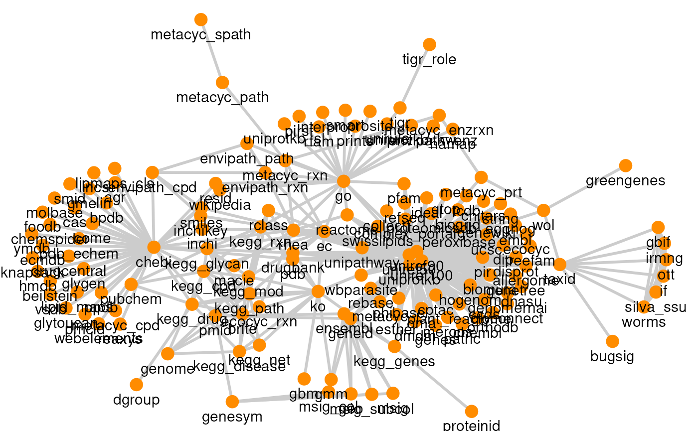
Some resources have multiple versions, which can be selected through
the argument versions. This defaults to the latest version
found in the database.
# List available resource versions
versions <- listResourceVersions()
# View versions
datatable(versions)The igraph object is made of two components: edges data and nodes (or vertices) data, which are stored in two different data tables.
# Convert igraph to data.frame pair
graph_df <- igraph::as_data_frame(graph, what = "both")
# Extract edges data
edge_df <- graph_df$edges
# Extract nodes data
node_df <- graph_df$verticesAs mentioned above, the resource graph is composed of feature types (nodes) and mappings (edges) from several resources. We generate the summary statistics for each resource integrated within ariadne.
# Get stats for each resource
df <- edge_df |>
group_by(source) |>
summarise(edges = n(), nodes = n_distinct(c(from, to)))
# View stats
datatable(df)The number of edges and nodes represent the amount of links and
feature types provided by each resource, respectively. These two metrics
largely vary between the available resources. The size and graph for
each resource can be visualized by generating individual graphs with the
argument res.name.
# Create resource graphs
plots <- lapply(
df$source, function(x) {
plotPath(graph, res.name = x, layout = "stress", focus = TRUE) +
ggtitle(x)
}
)
#> Warning in matrix(c(0, rep(0, dim - 1), 1, rep(0, dim - 2)), 2, dim, byrow =
#> TRUE): data length [3] is not a sub-multiple or multiple of the number of rows
#> [2]
# View resource graphs
plots
#> [[1]]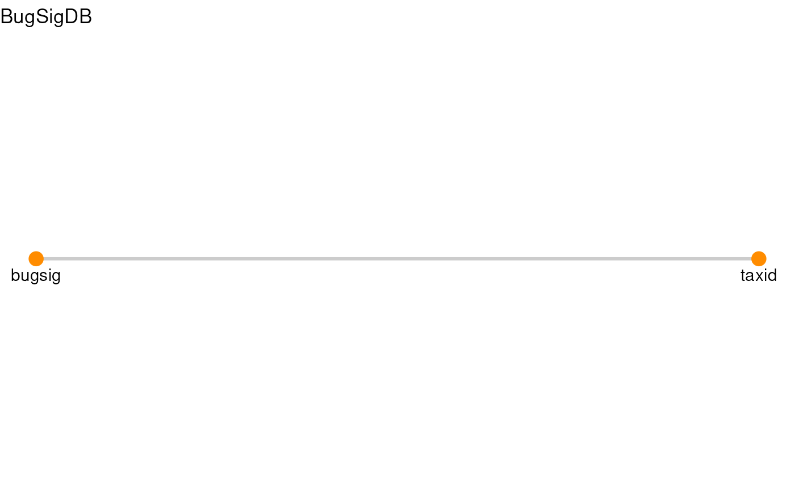
#>
#> [[2]]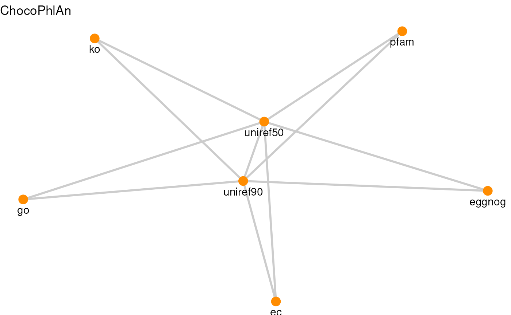
#>
#> [[3]]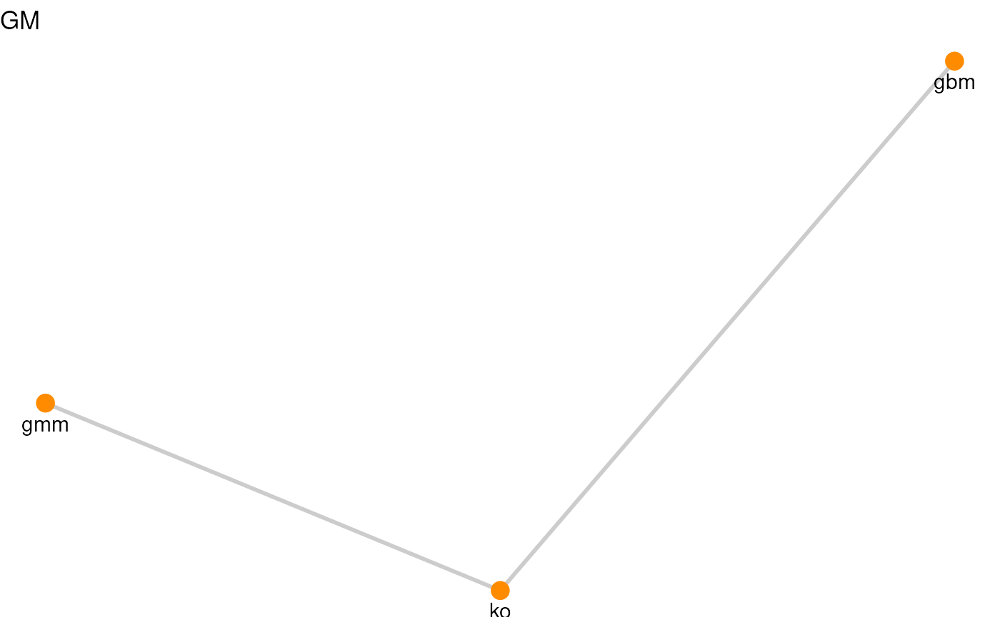
#>
#> [[4]]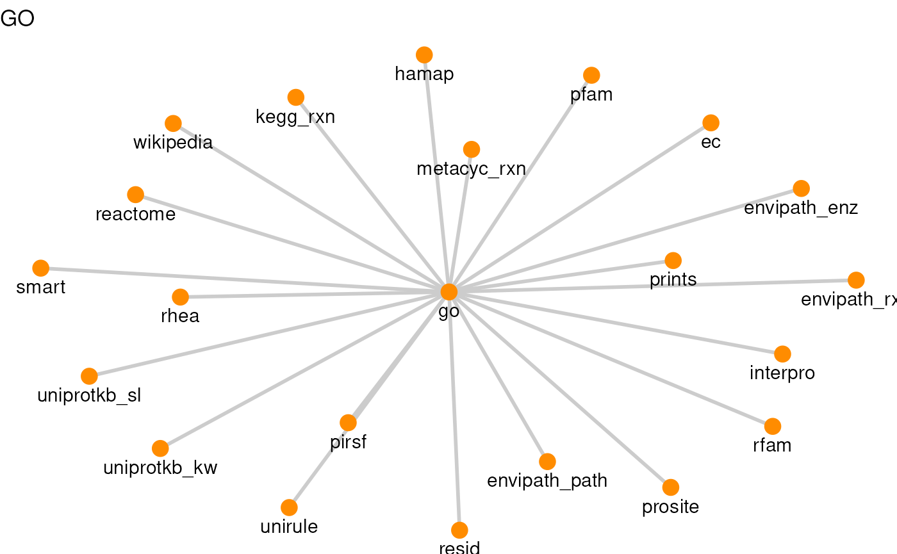
#>
#> [[5]]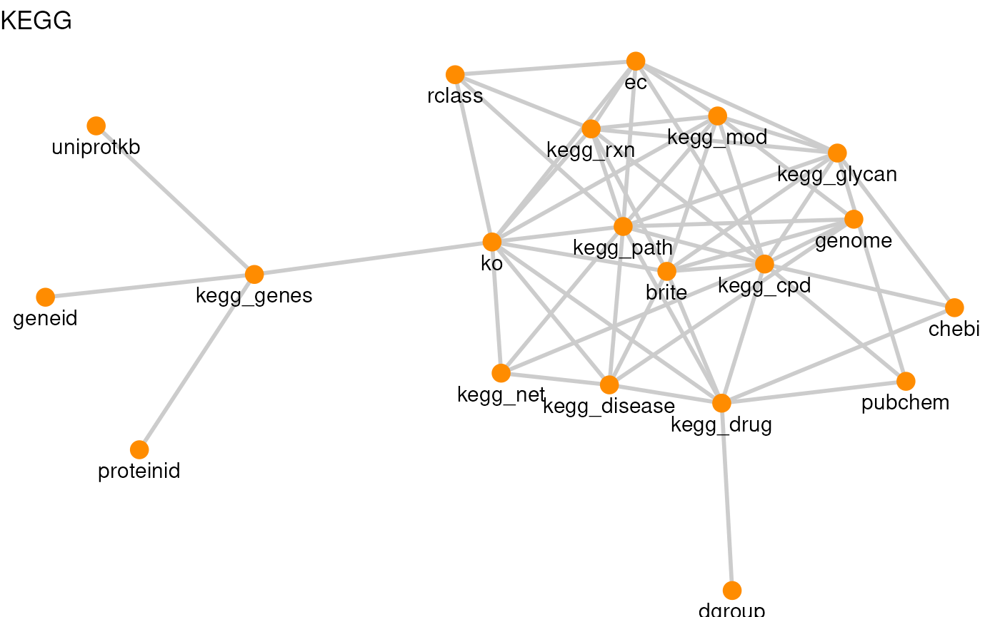
#>
#> [[6]]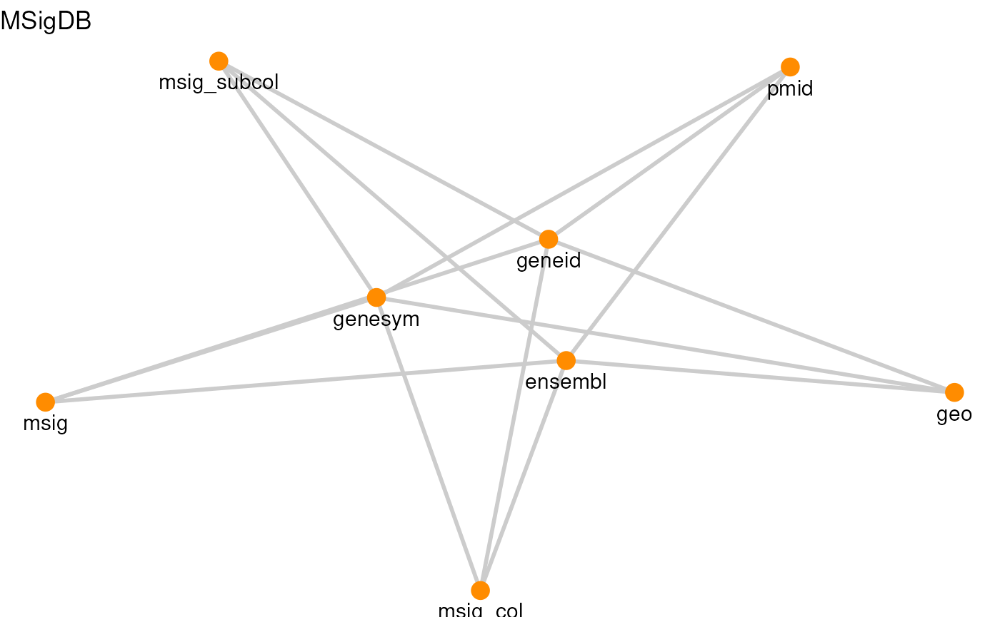
#>
#> [[7]]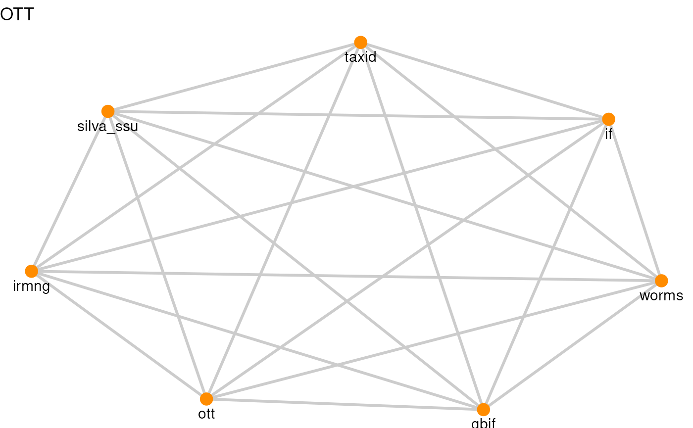
#>
#> [[8]]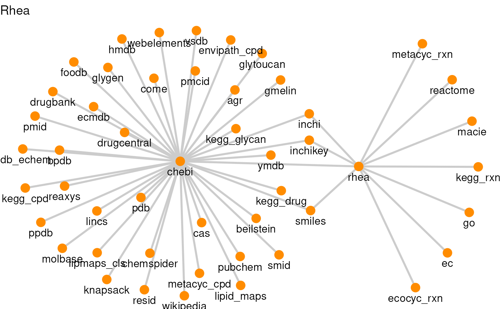
#>
#> [[9]]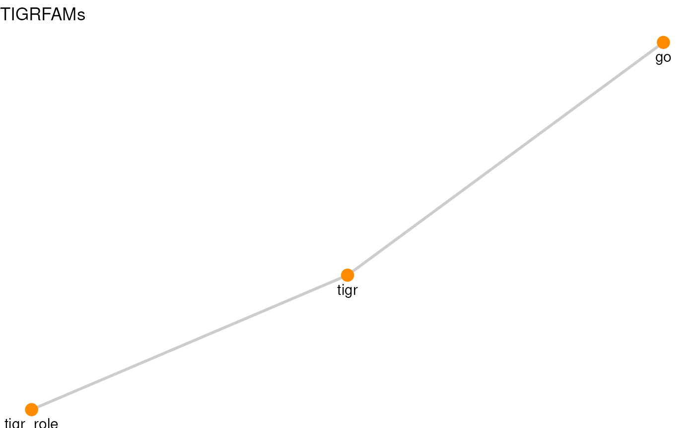
#>
#> [[10]]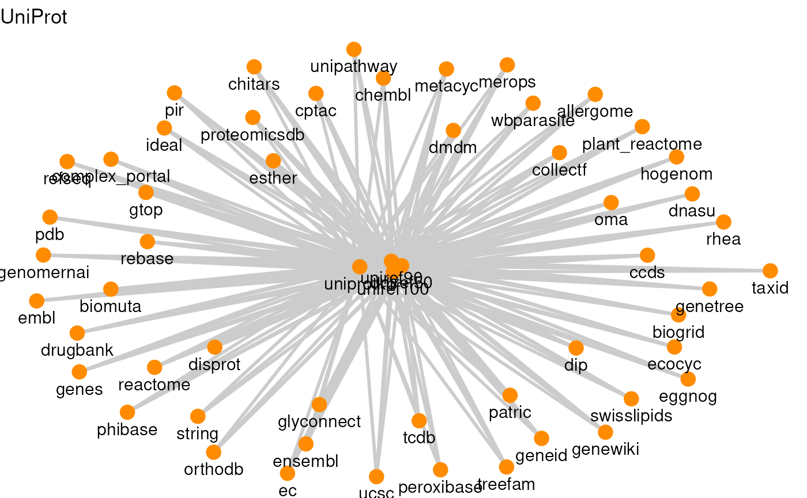
#>
#> [[11]]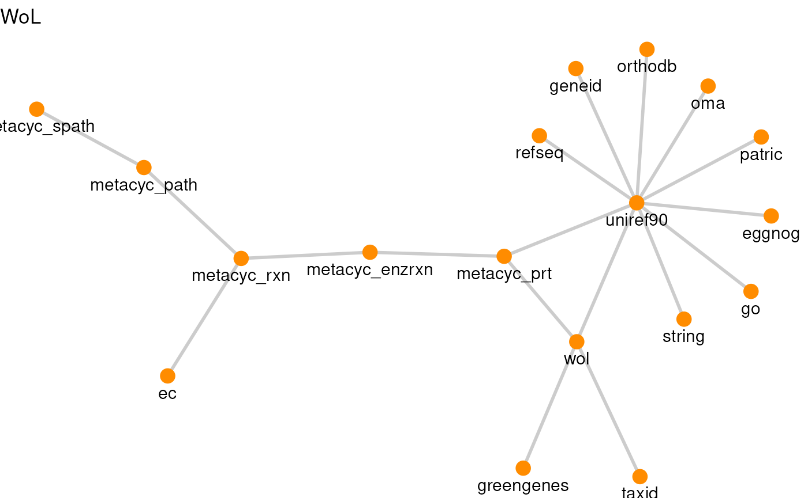
#>
#> [[12]]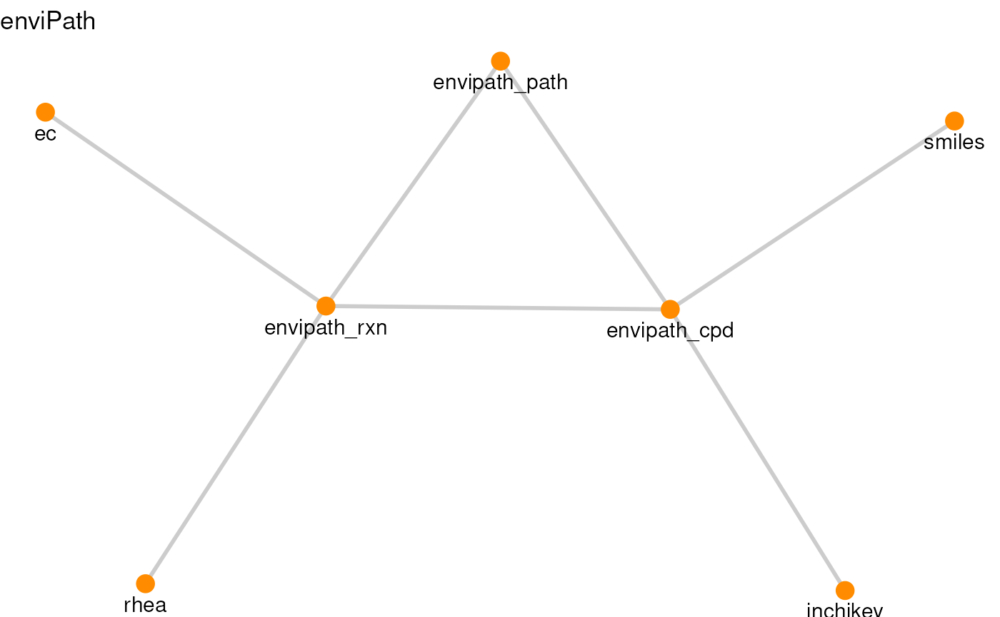
As seen in the graphs, each resource includes unique links between different feature types, which ariadneDB integrates into a single organised graph to benefit from its emerging properties.
R session information:
#> R version 4.6.1 (2026-06-24)
#> Platform: x86_64-pc-linux-gnu
#> Running under: Ubuntu 24.04.5 LTS
#>
#> Matrix products: default
#> BLAS: /usr/lib/x86_64-linux-gnu/openblas-pthread/libblas.so.3
#> LAPACK: /usr/lib/x86_64-linux-gnu/openblas-pthread/libopenblasp-r0.3.26.so; LAPACK version 3.12.0
#>
#> locale:
#> [1] LC_CTYPE=en_US.UTF-8 LC_NUMERIC=C LC_TIME=en_US.UTF-8 LC_COLLATE=en_US.UTF-8
#> [5] LC_MONETARY=en_US.UTF-8 LC_MESSAGES=en_US.UTF-8 LC_PAPER=en_US.UTF-8 LC_NAME=C
#> [9] LC_ADDRESS=C LC_TELEPHONE=C LC_MEASUREMENT=en_US.UTF-8 LC_IDENTIFICATION=C
#>
#> time zone: UTC
#> tzcode source: system (glibc)
#>
#> attached base packages:
#> [1] stats graphics grDevices utils datasets methods base
#>
#> other attached packages:
#> [1] DT_0.34.0 dplyr_1.2.1 ariadne_0.2.12 igraph_2.3.4 ggraph_2.2.2 ggplot2_4.0.3
#> [7] BiocStyle_2.41.0
#>
#> loaded via a namespace (and not attached):
#> [1] DBI_1.3.0 gridExtra_2.3.1 enviPathR_1.0.2 httr2_1.3.0
#> [5] rlang_1.3.0 magrittr_2.0.5 otel_0.2.0 matrixStats_1.5.0
#> [9] compiler_4.6.1 RSQLite_3.53.3 png_0.1-9 systemfonts_1.3.2
#> [13] vctrs_0.7.3 stringr_1.6.0 pkgconfig_2.0.3 crayon_1.5.3
#> [17] fastmap_1.2.0 dbplyr_2.6.0 XVector_0.53.0 labeling_0.4.3
#> [21] rmarkdown_2.32 tzdb_0.5.0 ragg_1.5.2 purrr_1.2.2
#> [25] bit_4.6.0 xfun_0.62 cachem_1.1.0 jsonlite_2.0.0
#> [29] progress_1.2.3 blob_1.3.0 DelayedArray_0.39.8 BiocParallel_1.47.0
#> [33] tweenr_2.0.3 prettyunits_1.2.0 parallel_4.6.1 R6_2.6.1
#> [37] bslib_0.12.0 stringi_1.8.9 RColorBrewer_1.1-3 GenomicRanges_1.65.4
#> [41] jquerylib_0.1.4 Rcpp_1.1.2 Seqinfo_1.3.2 bookdown_0.48
#> [45] assertthat_0.2.1 SummarizedExperiment_1.43.0 knitr_1.52 readr_2.2.0
#> [49] IRanges_2.47.5 rentrez_1.2.4 rotl_3.1.1 Matrix_1.7-6
#> [53] tidyselect_1.2.1 abind_1.4-8 yaml_2.3.12 viridis_0.6.5
#> [57] codetools_0.2-20 curl_8.1.0 lattice_0.23-1 tibble_3.3.1
#> [61] Biobase_2.73.2 withr_3.0.3 KEGGREST_1.53.6 S7_0.2.2
#> [65] evaluate_1.0.5 desc_1.4.3 polyclip_1.10-7 BiocFileCache_3.3.2
#> [69] Biostrings_2.81.9 pillar_1.11.1 BiocManager_1.30.27 filelock_1.0.3
#> [73] MatrixGenerics_1.25.0 stats4_4.6.1 generics_0.1.4 S4Vectors_0.51.10
#> [77] hms_1.1.4 scales_1.4.0 rncl_0.8.10 glue_1.8.1
#> [81] tools_4.6.1 data.table_1.18.6.1 forcats_1.0.1 XML_3.99-0.25
#> [85] fs_2.1.0 graphlayouts_1.2.5 multifactor_0.1.3 tidygraph_1.3.1
#> [89] grid_4.6.1 ape_5.8-1 tidyr_1.3.2 crosstalk_1.2.2
#> [93] nlme_3.1-171 ggforce_0.5.0 cli_3.6.6 textshaping_1.0.5
#> [97] S4Arrays_1.13.2 viridisLite_0.4.3 arrow_26.0.0 gtable_0.3.6
#> [101] sass_0.4.10 digest_0.6.39 BiocGenerics_0.59.12 SparseArray_1.13.4
#> [105] ggrepel_0.9.8 htmlwidgets_1.6.4 farver_2.1.2 memoise_2.0.1
#> [109] htmltools_0.5.9 pkgdown_2.2.1 lifecycle_1.0.5 httr_1.4.9
#> [113] bit64_4.8.6 MASS_7.3-66